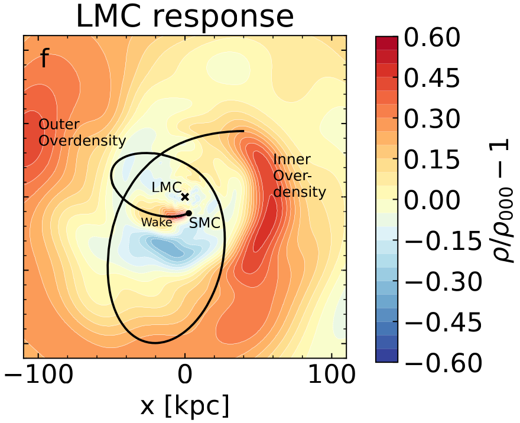
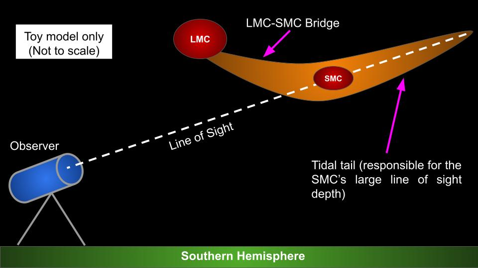
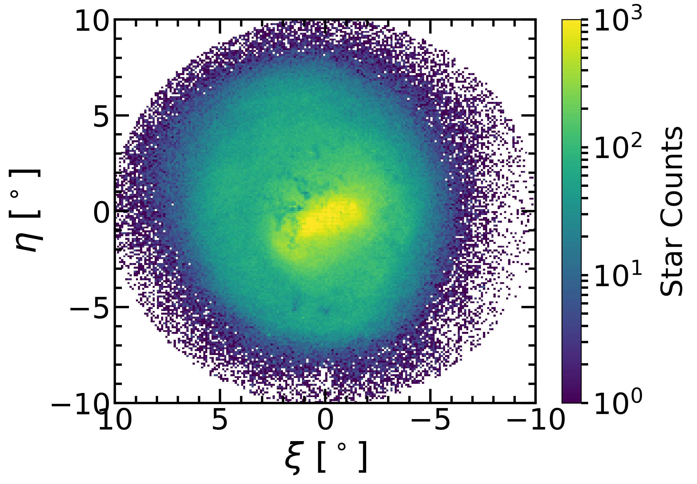
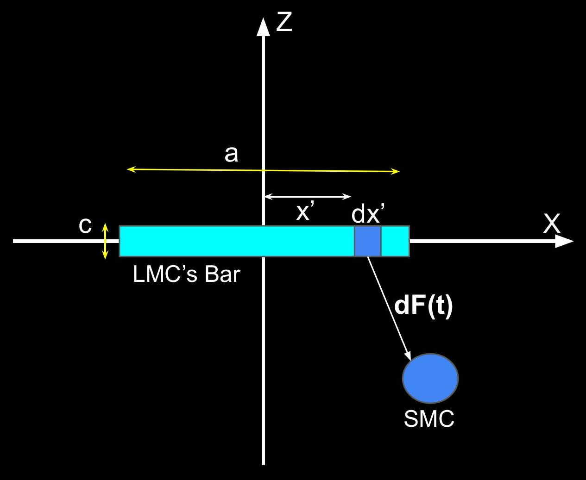
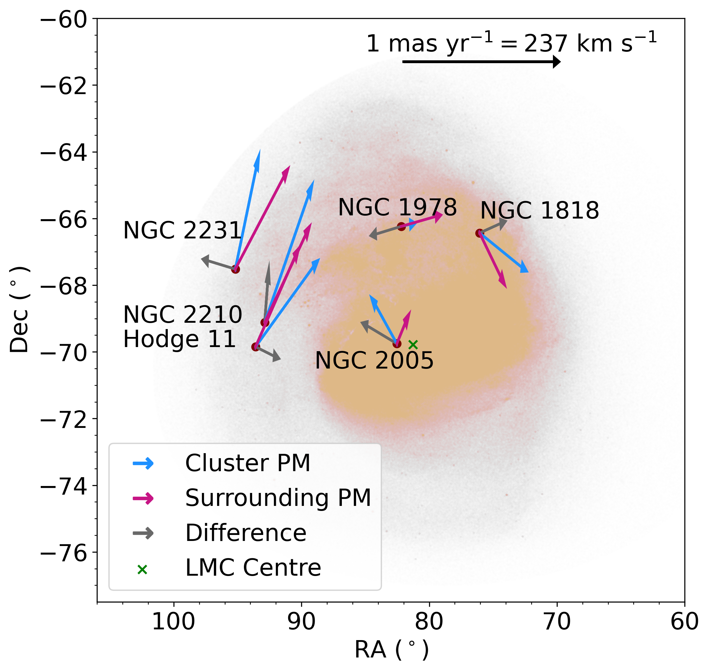
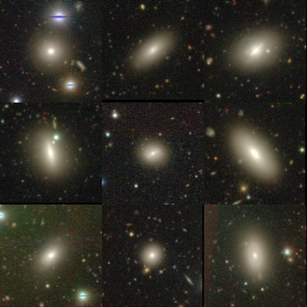
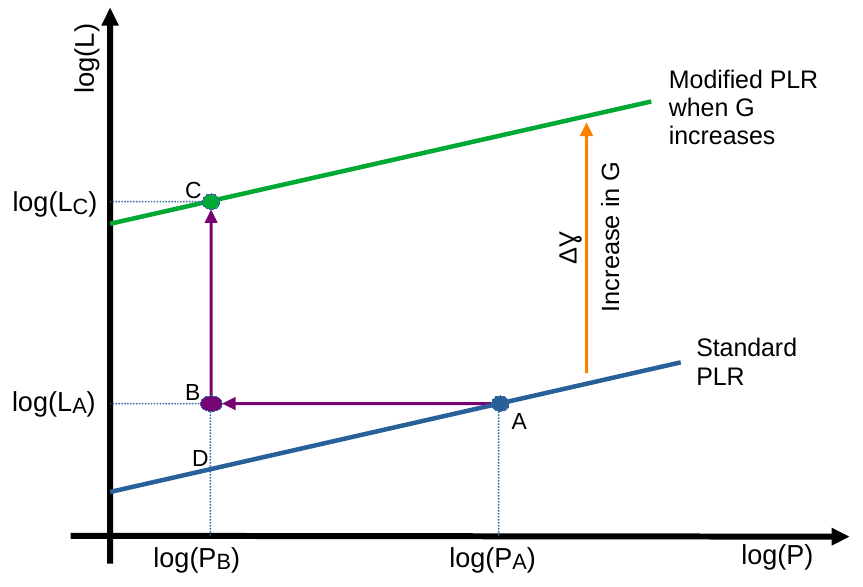

Currently, I am investigating the two most massive satellite galaxies of our Milky Way --- the LMC & SMC (collectively known as the Clouds). I played a crucial role in establishing that the Clouds have recently collided ! I am using the Clouds as an Astrophysical lab to advance our understanding of galaxy interactions, interstellar medium & dark matter physics:

The LMC's distorted dark matter halo. Source: Foote, Rathore+2026(c)
We show that the dark matter halos of the Clouds are significantly distorted, wherein the density field can deviate by ~60% relative to a spherical halo.
The mutual LMC-SMC interactions have significantly distorted their dark matter distributions. Modeling their complex dark matter distribution is important for accurately inferring the LMC-SMC interaction history as well as the orbits of the satellite galaxies associated with the Clouds. In Foote,Rathore+2026, we use basis function expansions on a state-of-the-art simulation of the LMC-SMC interaction history to map the Clouds' dark matter distribution. We also identify halo dynamical signatures that are applicable to a wide class of interacting galaxies.

Our likely viewing perspective of the SMC.
Source: Rathore+2025(c)
We showed that the SMC's gas is not rotating (contrary to the widely held belief), and that the gas velocity gradient is likely due to tidally driven outflows.
The SMC is in disequilibrium. This galaxy has an on-sky stellar extent of a few kpc, yet its line of sight depth is > 10 kpc, and the stellar & gas centers are separated by > 1 kpc. Using hydrodynamic simulations, in Rathore+2025(c), we showed that the SMC’s disequilibrium is explainable by a recent direct collision with the LMC. The LMC's tidal forces & ram pressure transforms the SMC from a rotationally supported to a dispersion dominated galaxy.

The LMC's completeness corrected Gaia DR3 red clump disk.
Source: Rathore+2025(a).
We show that the LMC hosts a strong bar, consistent with the expectation of bar-galaxy co-evolution.
The LMC has a strange bar. The bar is offset from the disk center, tilted with the disk plane and does not drive gas inflows. In Rathore+2025(a), we used Gaia DR3 data to measure the geometry and strength of the LMC's bar with the stellar density field. To perform this measurement, we developed a novel solution to tackle crowding induced incompleteness in Gaia datasets.
Why does the LMC's bar show such strange properties despite being consistent with bar - galaxy co-evolution ?

Schematic showing the SMC's torques on the LMC's bar.
Source: Rathore+2025(b).
The LMC bar's strange properties are explainable with a recent direct collision between the LMC & SMC. Excitingly, the bar's tilt is a direct probe of the SMC's dark matter content.
In Rathore+2025(b), we use hydrodynamical simulations to understand the response of the LMC's bar to a recent SMC collision. The SMC is responsible for the LMC bar's various strange properties, like its offset, tilt, lack of gas inflows and unusually low pattern speed. Further, the LMC bar's tilt is a direct consequence of the SMC's gravitational torques, and requires the SMC to be a dark matter dominated galaxy.

Kinematically outlying LMC Globular Clusters.
Source: Roychowdhury, Navdha, Rathore+2026
We showed that the SMC's gas is not rotating (contrary to the widely held belief), and that the gas velocity gradient is likely due to tidally driven outflows.
The SMC is in disequilibrium. This galaxy has an on-sky stellar extent of a few kpc, yet its line of sight depth is > 10 kpc, and the stellar & gas centers are separated by > 1 kpc. Using hydrodynamic simulations, in Rathore+2025(c), we showed that the SMC’s disequilibrium is explainable by a recent direct collision with the LMC. The LMC's tidal forces & ram pressure transforms the SMC from a rotationally supported to a dispersion dominated galaxy.
In addition to the Milky Way's neighbourhood, I have also performed investigations of more distant galaxies as well as the large scale behaviour of the universe:

Subaru Hyper Suprime Camera images of some star-forming S0s.
Source: Rathore+2022.
S0 galaxies possess well defined disks, but lack spiral arms and are generally expected to be quenched. Hence, the existence of star-forming S0s poses a significant challenge to galaxy evolution theories. In Rathore+2022, we performed a detailed study of star-forming S0s with resolved spectroscopic observations from the SDSS-MaNGA survey combined with deep optical imaging. Surprisingly, star-forming S0 galaxies in the local universe possess centrally dominated star-formation, which is different from disk dominated star-formation in typical spiral galaxies. Moreover, the star-forming S0s were most likely quenched S0s in the past whose star-formation has been rejuvenated, possibly through mergers with smaller galaxies.
For a relatively non-technical summary of this research, please refer to our article on CosmicVarta. I also gave a talk on this work at IIT Indore in July 2023, slides can be found here.

Effect of a G transion on the Cepheid Period-Luminosity relation.
Source: Ruchika, Rathore+2024
The Hubble tension is a raging debate in cosmology about the current expansion rate of the universe, as quantified by the Hubble constant. Early universe probes like the Cosmic Microwave Background and late universe probes like the Cepheid-Supernova distance ladder give different values of the Hubble constant. One possible explaination for the Hubble tension could be physics beyond the framework of general relativity, like a time varying gravitational constant (G). In Ruchika, Rathore et al. 2024, we proposed a transition in the value of G at late times, and evaluated its affect on the distance ladder. Through a careful statistical analysis, we found that a 4% larger value of the G at lookback times > 70 Million years is preferred by local universe data. Such a G transition is within existing observational constraints and can resolve the Hubble tension.